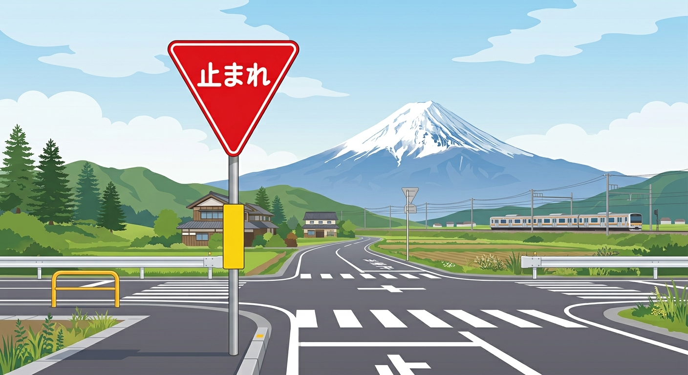

⚠️ Keep Left! Japan uses left-hand traffic. Pay extra attention at intersections!
1. Basic Traffic Rules in Japan

MUST STOP "STOP" Signs in Japan
Japanese STOP signs (止まれ - Tomare) are red triangles pointing down.
You MUST bring the vehicle to a full stop before the white limit line.
MUST KNOW Drive on the LEFT
Always stay on the LEFT side of the road.
- Right Turns: Be careful not to turn into the right lane of oncoming traffic.
- Controls: Turn indicators are often on the right side of the steering wheel.
2. Parking Rules & Local Conditions
NO PARKING Illegal Parking Prevention
Never park on narrow residential streets, roadside shoulders, or private property for taking photos.
- Stopping on local roads causes traffic jams and endangers residents.
- Always use official pay parking lots or designated tourist parking.
LOCAL ADVICE Local Driving Environment
Narrow Roads: Local residential roads around Lake Kawaguchiko can be very narrow. Watch for pedestrians and cyclists.
Winter Ice (Nov - Apr): Roads freeze overnight. Studless snow tires are required during winter.
Wildlife: Watch out for deer crossing the road at night or early morning.
3. Japanese Driving Etiquette & Manners
ETIQUETTE Narrow Road Courtesy
When giving way on narrow roads, drivers often flash hazard lights briefly as a "thank you" gesture.
Avoid using the horn unless avoiding immediate danger (honking can be seen as aggressive).
ETIQUETTE Emergency Vehicles
If you hear a siren from an ambulance or police car, pull over to the left side of the road and stop to let them pass.
4. What to Do in Case of an Accident
🚨 In Case of an Accident or Injury
Do NOT leave the scene. Japanese law requires reporting ALL accidents immediately.
110
Call Police (110)
Report any traffic accident or damage. Free call from any phone.
119
Call Ambulance / Fire (119)
Call immediately if anyone is injured or needs medical help.
5. Quick Driving Rules Quiz (5 Mins)
Q1. Which side of the road should you drive on in Japan?
Q2. Can you park on the street for a quick photo near tourist spots?
Q3. What must you do before crossing a railway crossing (train tracks)?
Q4. What is the emergency phone number to call the police in Japan?
6. Feedback & Inquiries